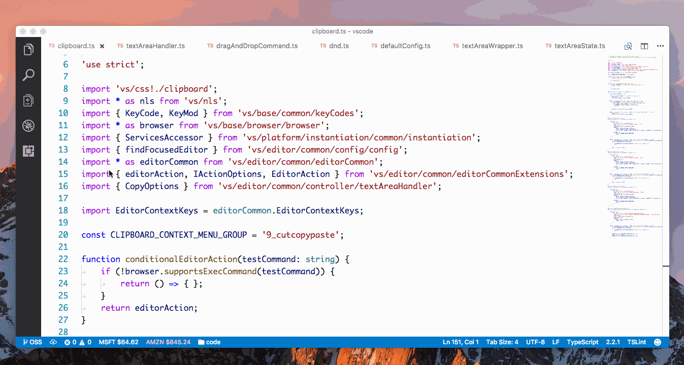
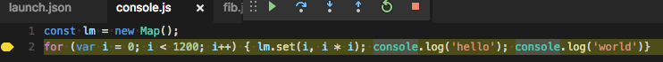
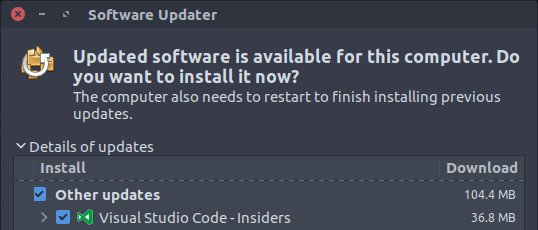

February 2017 (version 1.10)
1.10.2 Update
We are releasing a 1.10.2 update to add the 1.10 translations and address a handful of issues.
February Release Summary
Welcome to the February 2017 release of Visual Studio Code. There are a number of significant updates in this version that we hope you will like, some of the key highlights include:
- Preview: Minimap - Get a 10,000 foot view of your code with Minimap.
- Preview: Drag and Drop in the editor - Easily drag and drop text around the editor.
- Copy text with formatting - Copy code examples with full syntax highlighting.
- Auto generate JSDoc - Simply type
/**to generate JSDoc comments for your functions. - File Explorer key bindings - You can now create shortcuts for the Explorer and other list/tree UI.
- Official Linux repositories - VS Code supports auto-updating packages on Linux.
- Improved Exception view - Easily view exception details in the debugger.
- Column breakpoints - Set multiple breakpoints on the same line of source code.
- Links in the Terminal - Integrated Terminal output links streamline the workflow between editor and commands.
- Keybinding support for tasks - Assign keyboard shortcuts to commonly used tasks.
- HTML DOM navigation - Quickly navigate to DOM elements by id and class name.
- Language specific default settings - Appropriate default settings for Go, Make, YAML and Markdown.
The release notes are arranged in the following sections related to VS Code focus areas. Here are some further updates:
- Editor - Word wrap settings simplification, manually trigger Save actions, new cursor styles.
- Workbench - Configurable window title, run either selected text or entire file from the Integrated Terminal.
- Languages - TypeScript 2.2, disable color preview decorators, better link navigation in Markdown.
- Debugging - Launch debugger using just the keyboard, new variable syntax.
- Tasks - Run tasks in separate terminals, new ${lineNumber} variable.
- Extension Authoring - Pluggable SCM provider, Modal message dialogs, provide language specific settings.
Tip: Want to see new features as soon as possible? You can download the nightly Insiders build and try the latest updates as soon as they are available.
Editor
Preview: Minimap
A Minimap gives you a high level overview of your source code which is very useful for quick navigation and code understanding. To enable VS Code’s Minimap, set "editor.minimap.enabled": true to turn on the rendering of a Minimap for the current file.
The screenshot above is on a Surface Book (high DPI display). Based on the devicePixelRatio (for example, regular or retina/high DPI displays), the Minimap will render characters either at 4x2 pixels or at 2x1 pixels.
For those that would prefer a more schematic representation for the current file, there is editor.minimap.renderCharacters that can be set to false to render blocks instead of characters in the Minimap.
Here it is on a regular display:
This milestone we have focused on rendering the characters in a fast, incremental way (we reuse as many pixels as possible from the previous frame when rendering a new frame). We plan to add more useful information to the Minimap in the future, for example current selection, find matches, Git diff annotations, etc.
Preview: Drag and Drop selected text
You can now use the mouse to drag and drop selected text inside the editor. This feature is disabled by default and you can turn it on by set editor.dragAndDrop to true.

Please note we don’t support drag-and-drop across editors or across different applications at the moment.
Copy with syntax highlighting
You can now copy selected text to the Clipboard with syntax highlighting. It can be very useful when you paste the content into another application, for example, Outlook, and the content pasted into the application still has the correct formatting and colorization.
Technically, we add a new entry for HTML content into the Clipboard so even if the target application doesn’t support pasting rich text, the pasting will still work.

Copying plain text to the Clipboard is easy and straight-forward but copying text with syntax highlighting has to pay the price of rendering based on the Theme you are using, so in order to make sure this feature doesn’t slow down VS Code noticeably, we turn it off if you are copying a selection which contains more than 65536 characters.
If Copy and Paste with correct format and colors is your top priority, so you can always manually run the new command editor.action.clipboardCopyWithSyntaxHighlightingAction or even bind it to ctrl/cmd+c so you don’t need to worry if the selection length reaches the limit.
Word wrap settings redesign
In VS Code 1.9, we’ve changed the Toggle Word Wrap action to persist to User settings. The change was received with mixed feelings by our community, so for VS Code 1.10 we have rolled back that change and the action will only temporarily affect the current focused editor.
The change also started a healthy discussion around the difficulty of configuring the editor’s wrapping behavior. We therefore decided to deprecate editor.wrappingColumn (with its -1, 0, >0 cases) in favor of editor.wordWrap.
Here are the new word wrap options:
editor.wordWrap: "off"- Lines will never wrap.editor.wordWrap: "on"- Lines will wrap at viewport width.editor.wordWrap: "wordWrapColumn"- Lines will wrap at the value ofeditor.wordWrapColumn.editor.wordWrap: "bounded"- Lines will wrap at the minimum of viewport width and the value ofeditor.wordWrapColumn.
We also changed the default and now VS Code ships with editor.wordWrap: "off".
In this release, we added support for language specific default settings and we now turn on word wrap by default for Markdown files.
Manually trigger save actions
You can now save an editor via ⌘S (Windows, Linux Ctrl+S) even if the file is not dirty and extensions which perform actions on save will be triggered. This allows you to trigger Format on Save even if the file is not dirty.
New cursor styles
Thanks to PR #14237, there are three more cursor styles available: 'line-thin', 'underline-thin' and 'block-outline'.
Workbench
Configurable Explorer key bindings
By popular demand, you can now configure the key bindings for most of the commands in the File Explorer and OPEN EDITORS view.
The following commands could already be assigned prior to version 1.10 in the File Explorer:
explorer.newFile- Create a new fileexplorer.newFolder- Create a new folder
New commands that work in both the File Explorer and OPEN EDITORS view
explorer.openToSide- Open to the sidecopyFilePath- Copy path of file/folderrevealFileInOS- Reveal file in OS
New commands that only work in the File Explorer:
filesExplorer.copy- Copy a file from the File ExplorerfilesExplorer.paste- Paste a file that was copied from the File ExplorerrenameFile- Rename a file/folder in the File ExplorermoveFileToTrash- Move a file/folder to trash from the File ExplorerdeleteFile- Bypass trash and delete a file/folder from the File ExplorerfilesExplorer.findInFolder- Find inside a folder from the File Explorer
In addition to these commands, the following contexts are introduced for key bindings:
filesExplorerFocus- Keyboard focus is inside the File ExploreropenEditorsFocus- Keyboard focus is inside the OPEN EDITORS viewexplorerViewletFocus- Keyboard focus is in either the File Explorer or OPEN EDITORS view
Configurable tree/list key bindings
We introduced new commands (see below) to make working with trees and lists UI elements in VS Code more configurable for keyboard centric users.
Here is a list of new commands that will work in every tree and list:
| Command | Keyboard shortcut |
|---|---|
list.focusUp | Up Arrow (additionally on macOS: Ctrl+P) |
list.focusDown | Down Arrow (additionally on macOS: Ctrl+N) |
list.focusFirst | Home |
list.focusLast | End |
list.focusPageDown | PageDown |
list.focusPageUp | PageUp |
list.collapse | Left Arrow (additionally on macOS: Cmd+Up Arrow) |
list.expand | Right Arrow |
list.clear | Escape |
list.select | Enter (additionally on macOS: Cmd+Enter) |
list.toggleExpand | Space |
With these new commands, we now consistently support Ctrl+P and Ctrl+N to navigate up and down in trees and lists on macOS.
For example, on macOS to change the command to open from the File Explorer to be Enter (which normally brings you into rename mode), configure:
|
Configurable window title
We introduced a new setting window.title that can be used to change the window title based on the active editor opened.
You can compose the title with the following variables (shown here for /Users/Development/myProject/myFolder/myFile.txt):
${activeEditorLong}- /Users/Development/myProject/myFolder/myFile.txt${activeEditorMedium}- myFolder/myFile.txt${activeEditorShort}- myFile.txt${rootName}- myProject${rootPath}- /Users/Development/myProject${appName}- Visual Studio Code${dirty}- a dirty indicator if the active editor is dirty${separator}- a conditional separator (“ - “) that only shows when surrounded by variables with values
The window.title has the following defaults:
- Windows/Linux:
${dirty}${activeEditorShort}${separator}${rootName}${separator}${appName} - macOS:
${activeEditorShort}${separator}${rootName}
Note: We no longer support
window.showFullPathin favor of thewindow.titlesetting. The variable${activeEditorLong}will give you the full path.
Restore Zen Mode
Per user request, we have added a zenMode.restore setting to control if a window should restore to Zen Mode if it was exited in Zen Mode.
Theme configurations in settings
New settings have been added that define the currently active Color and File Icon theme:
|
By placing the options in the workspace settings, you can now have a different theme per workspace. These used to be stored in a separate location but now they are in your settings files.
To change a theme, you can still use the theme selection dialog in the Preferences menu with the Preferences: Color Theme and Preferences: File Icon Theme commands.
Links in the terminal
The terminal now creates links for URLs and text that looks like a path. These links will either be opened in a browser or the editor when triggered respectively.
Run in terminal commands
In previous releases, there was the single command workbench.action.terminal.runSelectedText which sent text to the terminal. This would send either the selection if there was one, or the entire file if not. This caused some issues as users would accidentally run entire files when they were expecting to run the current line if there was no selection. Running a file would also not work in some shells as the shell would interpret the text in chunks, not as a whole. To improve these scenarios, there are now two commands with distinct behaviors:
workbench.action.terminal.runSelectedText: Sends the selection if there is one to the terminal, otherwise sends the current line.workbench.action.terminal.runActiveFile: Sends the file path of the active file to the terminal (in most shells this will execute the file).
Display chord key bindings in menus
In previous releases, you might have noticed that a menu entry would not show a keyboard shortcut even though you had a key binding assigned. The reason was that some key bindings (for example multiple key chords) cannot be displayed as keyboard shortcuts in menus (including context menus).
As a workaround, we now show those key bindings as part of the menu label:
Search results count
We now show the total number of files and matches for a search in the Search View.
Improving search speed going forward
We’ve been looking into how to make our file search even faster. We explored two alternatives: Silver Searcher and ripgrep. If your are interested in our findings, have a look at our write-up. It’s a good read.
Languages
TypeScript
VS Code now ships with TypeScript 2.2. This release includes a number of new language features, bug fixes, and other enhancements.
TypeScript 2.2 also brings support for a number of new quick fixes, including:
- Add missing import
- Add missing property
- Add forgotten this to variable
- Remove unused declaration
- Implement interface or abstract class
Auto JSDoc comments
VS Code will now provide a JSDoc comment template for JavaScript and TypeScript functions when you type /**:
HTML
Document symbols are now available also for HTML, allowing you to quickly navigate to DOM nodes by id and class name.
Press ⇧⌘O (Windows, Linux Ctrl+Shift+O) to bring up the symbol in file.
Thanks to Cody Hoover for the contribution.
CSS
The CSS, LESS and SCSS color preview decorators can now be disabled in the settings:
|
Jade
Jade is now known as Pug. Nothing has changed but the language label. The language id is still jade and the .jade file extension is still served.
Vue
While Vue.js files may look like HTML files, they are much more than that. For that reason, the .vue file extension is no longer associated with HTML by default. However we do recommend you use a Vue.js specific extension for language support and the vetur extension is a good choice.
Go, Make, YAML, Markdown
These languages are now using the new support for default configuration settings per language (see Default Language specific editor settings below). For Go, Make, and YAML, the default settings configure Tab behavior as defined by these languages. For Markdown, the default enables word wrapping and disables quick suggestions.
Fragment link navigation for Markdown
Links to Markdown files that include a fragment will now try to open the file at the corresponding header:
|
This allows quickly navigating documentation directly within the VS Code editor.
Debugging
Column breakpoints
As per popular request, we now support setting breakpoints on an editor column.
This helps debugging code that contains multiple statements on a single line which typically occurs with heavily chained promises or minified source.
A column breakpoint can be set using ⇧F9 (Windows, Linux Shift+F9) or via the context menu during a debug session.

Note: A debug extension backend will adjust the location of breakpoints to ‘possible’ locations. This might cause breakpoints to move when starting a debug session or when setting a column breakpoint while a session is active.
Improved Exception experience
To improve the visibility of exceptions as they occur during debugging, we now show the exception directly in the editor with a peek UI:
This issue was raised because sometimes users were not aware that an exception was raised (especially in library code). Another motivation for the introduction of the peek UI was to make it easy to show many more exception details.
Ability to select and start a launch using keyboard
The option to launch debug configurations using just the keyboard (no mouse gesture necessary) was added, as per this request. It works similarly to running tasks, with an ability to launch a debugging session from the Command Palette. The keyword 'debug ' or the command Debug: Select and Start Debugging from the Command Palette is used to select and launch a configuration from launch.json.
New variable syntax
Starting with this release, we now support the colon character ‘:’ as a prefix separator in variable names (and we have deprecated the ‘.’). With this change, the new (and preferred) syntax for ‘env’, ‘command’, and ‘config’ variables becomes ${prefix:id}.
This makes command variables (where the command ID itself uses ‘.’) much more readable:
|
Precondition based on debugger type
It is now possible to have a precondition based on the current debug type. Preconditions can be used when defining keyboard shortcuts or when registering new commands as an extension.
Here’s an example of a shortcut that will only be enabled while you are debugging with type ‘node’:
|
Debug views sizes
We have fine-tuned the default sizes of Debug views. Also once the size is changed by the user, we preserve it across different VS Code sessions.
Node Debugging
Node2 transitioning
In this milestone, we’ve started to fold the two node debuggers (‘node’ and ‘node2’) into a single node debugging experience (behind the debug type ‘node’). The goal of this is to detect the supported debugging protocol(s) of the targeted Node.js runtime automatically and to select the best debugger implementation based on that protocol. We call the new protocol ‘inspector’ and the (now obsolete) v8-debugger protocol ‘legacy’.
Starting with this release, we recommend that you only use the ‘node’ debug type and we’ve deprecated the ‘node2’ type (‘node2’ is still available but its use in launch configurations will be flagged with a deprecation warning).
Since we still want to give you control over what debugger implementation to use, we’ve introduced a new attribute protocol with the following values:
auto: tries to automatically detect the protocol used by the targeted runtime. For configurations of request typelaunchand if noruntimeExecutableis specified, we try to determine the version by running Node.js from the PATH with an--versionargument. If the version is >= 6.9, the new ‘inspector’ protocol is used. For configurations of request type ‘attach’, we try to connect with the new protocol and if that works, we use the ‘inspector’ protocol. We only switch to the new inspector protocol for versions >= 6.9 because of problems in earlier versions.inspector: forces the node debugger to use the ‘inspector’ protocol based implementation (aka ‘node2’). This is supported by Node.js versions >= 6.3, but not (yet) by Electron.legacy: forces the node debugger to use the ‘legacy’ protocol based implementation. This is supported by Node.js versions < v8.0).
In the future auto will be the default, however since the transition to the new node debugging experience hasn’t been finished yet (and we were not brave enough to enable it by default), we continue to use legacy for the time being.
But we would like to encourage you to use 'protocol': 'auto' in your launch configurations and provide feedback if you experience problems.
Task support
Key bindings per task
You can now bind a keyboard shortcut to any task you want.
Simply add a key binding like this:
|
This binds ctrl+h to the task named tsc.
More work on Terminal Runner
As announced in the previous release, we are working on running tasks in the Integrated Terminal instead of the Output panel. In this release, we added support to compose tasks out of simpler tasks. If, for example, you have a workspace with a client and server folder and both contain a build script, you can now have one task that starts both build scripts in separate terminals.
The tasks.json file looks like this:
|
Please note the following things:
- This support is preliminary and subject to change.
- The terminal task runner can now also be enabled by using the
"version": "2.0.0"property.
Facilitating automation with ${lineNumber}
As requested by the community, we added a new variable ${lineNumber} for tasks.json and launch.json. It resolves to the selected line in the currently opened file. This new variable facilitates automation (e.g. running tests) under cursor selection.
Extension Authoring
Contributable SCM providers
We made further progress in February on creating a pluggable Source Control feature set for VS Code. Namely, all Git features were ported over to a Git extension.
All VS Code Insiders will get this new interface and we’ll use the March milestone to tune and tweak the experience. You can try this out via the SCM: Enable Preview SCM command, which will replace the legacy Git functionality with the experimental one (run SCM: Disable Preview SCM to undo).
Modal messages
The window.showInformationMessage and similar API calls have been updated to allow the use of modal message dialogs.
Here’s an example using the modal parameter:
|
Context specific visibility of Command Palette menu items
When registering commands in package.json, they will automatically be shown in the Command Palette (⇧⌘P (Windows, Linux Ctrl+Shift+P)). To allow more control over command visibility, we have added the commandPalette menu item. It allows you to define a when condition to control if a command should be visible in the Command Palette or not.
The snippet below makes the ‘Hello World’ command only visible in the Command Palette when something is selected in the editor:
|
Language specific editor settings
In this release, we added support for following language specific editor settings:
|
Default language specific editor settings: Extension authors can now contribute default language specific editor settings using the newly introduced extension point configurationDefaults in package.json.
Following example contributes default editor settings for the markdown language.
|
Debug Adapter Protocol
A new optional attribute clientID has been added to the InitializeRequestArguments. With this addition, a debug adapter can identify the client (frontend). We maintain a list of client IDs here.
For obtaining more information about thrown exceptions, we’ve introduced a new ExceptionInfoRequest and a corresponding type ExceptionDetails.
Miscellaneous
Official signed repositories for Linux
For Debian-based distributions, we now ship both Stable and Insiders in a signed apt repository that is automatically installed when you install the .deb package. This enables automatic updates using the platform’s update mechanism.

For Red Hat-based distributions, we ship Stable in a signed yum repository. You can install the repository by following these instructions.
Monitoring startup performance
Startup performance is important and we continuously try to improve it. Sometimes startup performance gets slower, mostly because of changes with unintended effects or because of changes in our dependencies. To ensure we see this early and to fix performance regressions, we have started to monitor the startup performance of a dedicated machine. We took a slightly outdated and dusty laptop and set it up as a build machine. Its ‘build result’ involves starting VS Code a couple of times and sending the startup timings to our telemetry stores. We also created a dashboard with visualizations of that data (PowerBI) and a slack bot (Azure Functions) that tells us once a day what the numbers are.
Notable Changes
- 1426: macOS: file events are not reported when using workspace path with different casing
- 12000: Terminals created in the background by the API will not display/retain any output until the terminal panel is initialized
- 15364: Make tabs smaller when workbench.editor.showTabCloseButton: false
- 16820: Hot Exit: Opens the same file twice in two separate windows
- 19625: API doesn’t update settings if there are trailing commas in settings.json.
- 19526: Filter installed extensions.
- 10610: When I hit a breakpoint VS Code opens a new readonly version of the file, breakpoints not shown in gutter.
- 19840: IntelliSense freezes at random instances
- 19993: Search perf regression in 1.9
These are the closed bugs and these are the closed feature requests for the 1.10 update.
Known Issues
- Duplicate errors and warnings - This issue may surface more often if the Preview SCM feature is enabled.
Contributions to Extensions
Our team maintains or contributes to a number of VS Code extensions. Most notably:
We also continued the work on our PHP parser. We designed it to help extension authors provide better tooling support for PHP. To verify our design and to help the PHP community with concrete first steps, we started to adopt the parser in the PHP language server.
Thank You
Last but certainly not least, a big Thank You! to the following folks that helped to make VS Code even better:
Contributions to vscode:
- Chirag Bhatia (@chirag64)
- Collin Grimm (@collinsnji): Fix #20897 PR #20899
- Dan Silver (@dan-silver): Callback parameter for TestEditorService() is optional PR #20967
- Dustin Campbell (@DustinCampbell): Update to latest C# TextMate grammar PR #20831
- Joshua Wester (@elemeht): Jenkinsfile are groovy too PR #16339
- Fred Bricon (@fbricon): Auto-close javadoc PR #19076
- Gama11 (@Gama11): Some typo fixes PR #19928
- Anton Vildyaev (@hun1ahpu)
- Fix for issue 12040 PR #18279
- Ong Heng Le (@initialshl)
- Kai Wood (@kaiwood)
- katainaka (@katainaka0503): Fix colorization of nested list. PR #19596
- Krzysztof Cieślak (@Krzysztof-Cieslak): Fix #15343 - Add
git commit --amendPR #17755 - Matheus Cruz Rocha (@matheusrocha89): Terminal encoding problem related to issue #14586 PR #20932
- Marek Lewandowski (@mlewand): Hotkey for Windows shell context menu PR #17710
- Marcel Miranda Ackerman (@reaktivo): Resizes the tab size when dirty file state changes, fixes #15364 PR #19976
- Ryan Fitzgerald (@rf-): Remove dependency on window.event in ListView PR #20966
- Kazuyuki Sato (@satokaz): markdown-it-named-header custom slugify for non-latin characters PR #20628
- Alex (@soncodi): Add syntax highlighting for JS/TS template string interpolation (Monokai built-in theme) PR #17841
- Hugo Duthil (@Swiiip): Add new cursor styles PR #14237
- Tim Jones (@tgjones): HLSL syntax highlighting, use HLSL grammar to highlight Cg blocks in ShaderLab files PR #20129
- Treri Liu (@Treri): git clone nvm with –depth 1, to make clone faster PR #19967
- @typicode: Update ghooks (deprecated) devDependency PR #19434
Contributions to vscode-eslint:
- darkred (@darkred): Move the ‘Release Notes’ from inside ‘eslint/README.md’ to a separate ‘eslint/CHANGELOG.md’ PR #205
Contributions to language-server-protocol:
- Anton Kosyakov (@akosyakov): Remove notion of the next tag of the node implementation PR #171
- bolinfest (@bolinfest): Contributions to
vscode-languageserver-node: Introduce DocumentUri concept PR #170 - Olivier Thomann (@othomann): Fix typos PR #159
Contributions to vscode-languageserver-node:
- Tobias Bieniek (@Turbo87): Cleanup “installServerIntoExtension” script PR #150
- David Greisen (@dgreisen): MessageBuffer.append: length of string in bytes PR #163
Contributions to vscode-languageserver-node-example:
- Leo (@clinyong): fix typo PR #30
Contributions to vscode-html-languageservice:
- Cody Hoover (@hoovercj): Add findDocumentSymbols PR #7